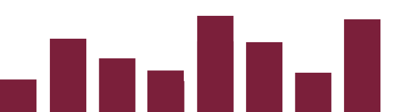

We're pleased to announce that a new usage statistics portal is available for Journal Archives.
The portal provides full text access statistics for subscribing institutions from the launch of the new platform on 14 January 2015. The usage statistics report we provide follows the rules of COUNTER. It 's not currently COUNTER compliant, but this is something that we will be working towards in future.
The portal is available to librarians at subscribing institutions and more than one librarian at an institution can have a user account for it. Please contact our helpdesk at journalarchives@jisc.ac.uk to request an account.
Additional reports will also be available in future and we're keen to gather feedback on the data that you would find useful. Please do contact our helpdesk at journalarchives@jisc.ac.uk to let us know your thoughts.
We would also like to thank the librarians who kindly provided feedback during the testing phase of the portal.
We now have a new helpdesk email address for Journal Archives: journalarchives@jisc.ac.uk.
Please use this email address for all future enquiries to the Journal Archives helpdesk.
As Mimas became part of the Digital Resources Directorate at Jisc in August 2014, we have now moved from a Mimas to a Jisc email address format.
Emails to the old helpdesk email address (journalarchives@mimas.ac.uk) will continue to be forwarded to us for a transition period.
If you have any questions about this change or require any other assistance please do contact us at journalarchives@jisc.ac.uk.
Few titles sum up an era and a movement like Spare Rib. With its commitment to challenging the status quo, Spare Rib battled oppression and gave a voice to the struggles, discussions and debates of diverse groups of women over the 21 years it was in print (1972-1993).
From today, every edition of Spare Rib magazine will be available to be viewed by anyone online for free.
The British Library will host a curated Spare Rib website featuring 300 selected pages from the magazine, alongside articles written by academics, activists and former contributors about how Spare Rib was run, its history and the issues it tackled.
This site will link through to the website for Jisc, a charity which supports digital technologies in UK education and research, where the entire run of magazines will be available to view. Jisc's Journal Archives platform allows users to browse across 239 issues and locate material from more than 11,000 pages of the magazine.
Until now, the full run of magazines has only been available for consultation in the British Library reading rooms and a few other libraries and archives.
The digitised Spare Rib site will mean that researchers, historians, students and anyone interested in feminism or activism can search across all 239 editions for the first time, transforming the way in which the magazines can be accessed, discovered and re-used.
Polly Russell, Curator of Politics and Public Life at the British Library commented:
“Funny, irreverent, intelligent and passionate, Spare Rib was a product of its time which is also somehow timeless.”
“Detailed features on feminist issues such as domestic violence and abortion, and news stories about women from the UK and around the world sit side-by-side with articles about hair care (including the unwanted kind), how to put up a shelf and instructions on self-defence.”
“Just as varied were the breadth of voices in the magazine; early editions of Spare Rib involved big-name contributors including Betty Friedan, Germaine Greer, Margaret Drabble and Alice Walker, but alongside these were the voices of ordinary women telling their own stories.”
“By making this part of our intellectual heritage available online, we hope it will attract new and returning generations of readers to the magazines for research, inspiration and enjoyment.”
A selection of articles from the Spare Rib archive:
To discover more Spare Rib articles, visit www.bl.uk/spare-rib or http://journalarchives.jisc.ac.uk/britishlibrary/sparerib
This project has been developed in consultation with the original community who founded and published Spare Rib.
Marsha Rowe, co-founder of Spare Rib magazine, said:
“I'm thrilled at the digitization of Spare Rib by the British Library. It's as if the magazine has been given a new lease of life. By making the magazine freely available over the internet, it can encourage women round the world to act together for change and be a resource in support of their struggle for rights and freedoms.”
Sue O'Sullivan, who worked full time at Spare Rib from 1979-1984, said:
“Spare Rib was a highly visible part of the Women's Liberation Movement, and a tool for reaching thousands of women every single month for over 20 years. The digitised magazines will be a wonderful resource for younger historians and feminist activists, researchers and all the women (and men) who wonder what their mothers, aunts, grannies and older friends got up to all those years ago.”
Debra Ferreday, Senior Lecturer, Centre for Gender and Women's Studies, Lancaster University comments:
“The importance of the Spare Rib archive can't be overestimated. It's a unique record of the Women's Liberation Movement which will be of huge value to feminist researchers, scholars, students and activists everywhere. I'm delighted that Jisc and the British Library have made this material available in such an accessible, user-friendly form.”
Notes to Editors
The Spare Rib resource is an important addition the British Library's growing resources relating to the feminist history. To discover more see Sisterhood & After, our oral history archive which captured over 100 voices from the Women's Liberation Movement.
Jisc's Journal Archives platform was launched earlier this year to provide access to digital content for further and higher education. The archive provides access to a wealth of content from eight major publishers, and features over 600 journal titles as well as Spare Rib.
For more information:
Sophie McIvor, Head of Media Relations, The British Library
t: +44 (0)20 7412 7990
Evenings and weekends: +44 (0) 20 7412 7150
The British Library is the national library of the United Kingdom and one of the world's greatest research libraries. It provides world class information services to the academic, business, research and scientific communities and offers unparalleled access to the world's largest and most comprehensive research collection. The Library's collection has developed over 250 years and exceeds 150 million separate items representing every age of written civilisation and includes books, journals, manuscripts, maps, stamps, music, patents, photographs, newspapers and sound recordings in all written and spoken languages. Up to 10 million people visit the British Library website - www.bl.uk - every year where they can view up to 4 million digitised collection items and over 40 million pages.
Jisc offers digital services and solutions for UK education and research. The charity does this to achieve its vision for the UK to be the most digitally advanced education and research nation in the world.
Working together across the higher education, further education and skills sectors, Jisc provides trusted advice and support, reduces sector costs across shared network, digital content, IT services and procurement negotiations, ensuring the sector stays ahead of the game with research and development for the future.
Find out more at www.jisc.ac.uk or contact the press team on press@jisc.ac.uk
On the 14th of January 2015, a new platform was released for Journal Archives:
http://journalarchives.jisc.ac.uk
The new platform has been built using Elasticsearch open source software and incorporates a new user interface with an article viewer. It provides access to the same 8 publisher backfiles as the previous platform, enabling you to cross search, view and download articles from over 600 journals from 8 publisher backfiles.
You can search by author, article title, journal title, ISSN or across the full text. You can also specify dates, volumes, issues, start page or a DOI to narrow down your results set. All of the articles are available as PDFs which can either be viewed in the PDF viewer (similar to the viewer in Historical Texts) or downloaded.
The new service is Open URL v.0.1 compliant and redirects for link resolvers are in place from the previous platform. Further information on authentication, WAYFLess URLs, proxy server settings and usage statistics can be found on our librarians page.
Journal Archives has been developed on behalf of Jisc Collections by Knowledge Integration, Gooii Ltd, Sero and Mimas, the same team who have developed Historical Texts, and it is running in the cloud.
We do hope you like the new platform and we welcome feedback on it, so please do contact us at journalarchives@mimas.ac.uk to let us know your thoughts on it or for any assistance.
The news items below refer to our previous platform, Jisc Journal Archives, which was replaced by Journal Archives on 14 January 2015.
We’re pleased to announce the release of the beta version of our new platform for Jisc Journal Archives. The new platform will replace the current platform in the New Year and the service name will also change from Jisc Journal Archives to Journal Archives.
You can search, browse and view the journal articles online as well as download them as PDFs.
The new platform contains the same 8 publisher archives as Jisc Journal Archives but the search software and user interface are different. It's been built by the same team (Knowledge Integration, Gooii Ltd, Sero Consulting, Mimas and Jisc Collections) as our sister service Historical Texts, so the look and feel will be familiar to anyone used to Historical Texts. It's using the same open source software (elasticsearch) and it’s running in the cloud.
All institutions currently subscribing to Jisc Journal Archives have automatically been given access to the new beta version. Simply click on the search button to gain access directly (ip authentication) or to enter your institutional account (UK Federation Shibboleth/OpenAthens) details.
The beta version of Journal Archives: http://journalarchives.jisc.ac.uk
If your institution does not currently subscribe to Jisc Journal Archives your librarian can request a 30 day free trial if your institution is a full member of Jisc Collections. Further details on subscription options.
We would appreciate any feedback on the beta version so please do contact us at journalarchives@mimas.ac.uk to let us know your thoughts on it, particularly if you encounter any problems or find you are unable to do something that you need to.
We have created support pages for librarians for Jisc Historic Books and Jisc Journal Archives:
Jisc Historic Books: http://ecollections.mimas.ac.uk/books/librarians.html
Jisc Journal Archives: http://ecollections.mimas.ac.uk/journals/librarians.html
These pages contain information to help librarians manage and monitor access to the platforms, for example authentication options, WAYFless URLs and usage statistics. For Jisc Journal Archives the page also contains KBART format holdings lists.
These pages also provide details of our scheduled maintenance periods. In order to keep the platforms running at optimal performance we need to undertake maintenance tasks from time to time. We aim to schedule this on Tuesdays between 07:00-09:00, where possible, to minimise the impact on people using the system. When specific maintenance has been scheduled we will notify you of the date.
For Jisc Historic Books we have scheduled the following dates for maintenance work which may require us to restart the system:
In these instances the platform may be unavailable for around 15 minutes at some point between 07:00 and 09:00 and should be considered *at risk*.
We hope you find these pages helpful, and if there are any questions about them, or additional content that you would like to see included, please do contact our helpdesks at historicbooks@mimas.ac.uk or journalarchives@mimas.ac.uk.
Thank you to everyone who completed our JISC Journal Archives user satisfaction survey. The survey ran from 23 November 2012 to 28 February 2013, with a pop up prompt or a text link appearing after logging in to the platform, and we received 41 responses.
We were pleased to see that 76% of respondents found JISC Journal Archives easy to use, 90% agreed that their work would take longer without it and 95% of respondents would recommend JISC Journal Archives. Features that were liked include the ability to search a variety of journals in one place and being able to download them all as PDFs. Suggested improvements included adding more material and showing the article abstracts.
The full user satisfaction survey report (PDF) is available now and some highlights are shown below.
A selection of comments we received:
Higher Education, undergraduate student:
“Jisc would be highly beneficial to any student”
Higher Education, undergraduate student:
“Everything I want/need is easy to find. All the information is given on the cover ‘sheets’ from which the articles can be downloaded, and so referencing is made that much easier”
Higher Education, undergraduate student:
“Because it is the main journal archive that I use - I find it the most reliable and most likely to have the sources I require”
We really appreciate people taking the time to provide this valuable feedback and all comments and responses have been reviewed by the team and will be taken on board as we develop the platform.
The JISC Journal Archives team
We are pleased to announce that new titles are now available in our Oxford Journals Archive and our Cambridge Journals Digital Archive.
Oxford Journals Archive Upgrade
The Oxford Journals Archive Upgrade is now available in Jisc Journal Archives. The upgrade includes an additional 32 Oxford University Press (OUP) journals containing over 76,000 articles that have been digitised since the original archive was purchased by Jisc Collections in 2006. Each journal is available from volume one issue one until the last issue in 1995.
We have also received and indexed data previously missing from the Medicine Archive (1878-1995) and the Science Archive (1878-1995) from the original Oxford Journals Archive data provided to us.
All the new Oxford Journals Archive titles available in Jisc Journal Archives are listed in PDF and KBART file formats.
To view all the titles now included in the Oxford Journals Archive please see the platform browse page.
Additionally we have made some improvements to the way the OUP Notes and Queries articles have been indexed. Previously the titles were not very indicative of the contents, for example: “Notes and Queries: s1-I.1.10” as shown in the screenshot below.
We have now created titles that are a concatenated list of the titles included on each page. The title for the example above is now “LIBER SENTENTIARUM.-INQUISITION OF THOULOUSE; NEW FACTS ABOUT LADY ARABELLA STUART”, which is comprised of the following titles in the article:
This means the titles are more descriptive when they appear in your search results and when navigating the browse pages:
Cambridge Journals Digital Archive
We have also now received, loaded and indexed the Humanities and Social Sciences titles from the Cambridge Journals Digital Archive. Previously only titles from the Scientific, Technical and Medical collection were available in Jisc Journal Archives.
All the new Cambridge Journals Digital Archive titles available in Jisc Journal Archives are listed in PDF and KBART file formats.
To view all the titles now included in the Cambridge Journals Digitial Archive please see the platform browse page.
A full list of all the titles available in Jisc Journal Archives can be found in our KBART file: MS Excel version (140 kB), text version (144 kB).
The list follows the Knowledge Bases And Related Tools (KBART) format, so you will notice that there are repeated lines for journal titles where the sequence of titles is broken by one or more years. There are some journals where there are multiple breaks of one year, even though the sequence of volumes is unbroken, so they also appear on multiple lines.
The Jisc Journal Archives team
The third edition of Jisc eCollections News (PDF, 335kB) is available now, highlighting recent developments and future plans for the Jisc eCollections service.
This Easter edition includes details of the latest enhancements and a new Bioscience collection for Jisc MediaHub as well as a variant spelling project and progress update on obtaining MARC records for Jisc Historic Books.
Top 10 statistics show the highest use institutions for August 2012 - January 2013 and you can also find out about upcoming events.
We hope you find the newsletter informative and we welcome feedback on it.
The Jisc Historic Books and Jisc Journal Archives team.
The JISC Historic Books and JISC Journal Archives helpdesks at Mimas will be closed for the Christmas break from 22nd December 2012 to 1st January 2013 inclusive. We'll respond to any enquiries received during this period when we return on 2nd January.
JISC Historic Books and JISC Journal Archives will run unattended during this time.
We wish you a Merry Christmas and a Happy New Year and we'll leave you with a festive image from our JISC Historic Books collection. It's taken from A Christmas Carol by Charles Dickens (click on the image to view an enlarged version).
The JISC Historic Books and JISC Journal Archives team.
The December 2012 issue of the JISC eCollections service newsletter is available now. This issue includes details on the new features released in JISC Historic Books in November and new materials added to JISC MediaHub.
The newsletter has been created by JISC Collections, EDINA and Mimas and it's designed to keep you up to date with the latest enhancements, upcoming developments and support information for all three platforms in the JISC eCollections service (JISC Historic Books, JISC Journal Archives and JISC MediaHub).
JISC eCollections newsletter - December 2012 (PDF)
The newsletter is produced every other month and the next edition will be in February 2013.
We hope you find it informative and we welcome feedback so please do let us know what you think.
The JISC Historic Books and JISC Journal Archives team.
We are currently running online user satisfaction surveys for JISC Historic Books and JISC Journal Archives.
The platforms are in continual development and these surveys give you the opportunity to have your say and help to shape their future development. We're keen to learn more about you and how you use JISC Historic Books and JISC Journal Archives as well as what kind of support and training materials would be useful to you.
The survey prompts will appear when you login to the platforms:
We would really appreciate it if you could take the time to complete the surveys, it should only take a few minutes.
Your feedback will help us to develop the platforms and support materials to meet your needs.
The JISC Historic Books and JISC Journal Archives team.
We are pleased to announce that JISC Collections, EDINA and Mimas have created a JISC eCollections service newsletter to keep you up to date on the latest enhancements, upcoming developments and support information for all three platforms in the JISC eCollections service (JISC Historic Books, JISC Journal Archives and JISC MediaHub).
The newsletter will be produced every other month and the first edition is available now:
JISC eCollections newsletter - October 2012
The next edition will be in December 2012.
We hope you find it informative and we welcome feedback so please do let us know what you think.
The JISC Historic Books and JISC Journal Archives team.
We are pleased to announce that JISC Historic Books and JISC Journal Archives usage statistics are now available for institutions to download.
Librarians at subscribing institutions are able to view and download their full text access statistics for both platforms via new web interfaces. Statistics are available from the launch of the platforms on 1st August 2011 and reports can be viewed online in html format or downloaded in .csv format.
Access details have been emailed to librarians at subscribing institutions. You can access the usage statistics interfaces using the same authentication method you use to access JISC Historic Books and JISC Journal Archives, either via UK Access Management Federation (Shibboleth and OpenAthens) or ip authentication, depending on which options have been set up for your institution.
If you haven't received an email, or if you experience any problems with accessing the usage statistics, please do contact our helpdesks at historicbooks@mimas.ac.uk or journalarchives@mimas.ac.uk.
We will be enhancing the web interfaces to include additional statistics in the future, so if you have any suggestions for other statistics that would be useful to you please do contact our helpdesks to let us know.
The JISC Historic Books and JISC Journal Archives team.
The JISC Journal Archives Advisory Board met in London on 30 Mar 2012 to discuss the next development steps for the platform. The meeting notes will be made available on the JISC eCollections service website shortly. The notes from the last meeting in December 2011 are already available.
You can find out more about the Advisory Board on the JISC eCollections service website, including their objectives and a list of their current members.
There's also a new blog for all the Advisory Boards in the JISC eCollections service and the first post from the chair of the JISC Journal Archives board, Graham Stone, Information Resources Manager at the University of Huddersfield, is up now. We really value feedback from the community so please feel free to comment on it to let us know what you think.
We welcome additional members on the board so if you are interested joining and helping to guide the development of this platform please contact the JISC Collections helpdesk at help@jisc-collections.ac.uk.
The JISC Journal Archives team.
The Taylor & Francis Geography, Planning, Urban and Environment Online Archive is now available in JISC Journal Archives.
The archive contains the backfiles of 28 journals published under the Routledge imprint between 1884 and 1996. Many of the titles included are published on behalf of other societies and organisations, for example Landscape Research (The Landscape Research Group) and European Planning Studies (The Association of European Schools of Planning (AESOP). The archive includes many well established journals, influential in their field, for example Australian Geographer and the Scottish Geographical Journal (previously titled Scottish Geographical Magazine).
As some journals have had title changes during the period covered by JISC Journal Archives, you will notice they will be listed under both titles, along with the relevant volumes and issues for each one.
For example, the Journal of Property Research was known as Land Development Studies between 1984 - 1990. JISC Journal Archives coverage for this title is 1984 - 1996 so you will find it listed as:
Details of all the title changes for this archive can be found on our new Title Changes page.
You can browse the journals, and access the full text for each article, from the JISC Journal Archives browse page.
If you have any questions or comments about the Taylor & Francis Geography, Planning, Urban and Environment Online Archive please do contact the helpdesk at: journalarchives@mimas.ac.uk.
The JISC Journal Archives team.
The JISC Journal Archives and JISC Historic Books helpdesks at Mimas will be closed for the Christmas break from 23rd December to 2nd January inclusive. We'll respond to any enquiries received during this period when we return on 3rd January.
JISC Historic Books and JISC Journal Archives will run unattended during this period.
We wish you a Merry Christmas and a Happy New Year.
The JISC Historic Books team.
It's now possible to link into JISC Journal Archives via OpenURL link resolvers. We've provided our holdings details to Serials Solutions (360 Link), ExLibris (SFX) and EBSCO (LinkSource) already and we are currently liaising with Innovative Interfaces (WebBridge).
If your insitution uses an OpenURL link resolver that is not provided by one of these companies please do contact the helpdesk at journalarchives@mimas.ac.uk and we'll liaise with the provider on your behalf.
If your institution does not have an OpenURL link resolver and you would like to use title level url links we provide a journal titles list spreadsheet, including these links, in our FAQs: http://ecollections.mimas.ac.uk/journals/faq.html#titles
The JISC Journal Archives team.
JISC Collections has formally launched the new JISC eCollections service today. Read the full announcement on the JISC Collections website.
The JISC Historic Books and JISC Journal Archives team.
JISC Journal Archives and JISC Historic Books are now on Twitter. Follow us to find out the latest news, developments and support information for each platform.
Follow @JournalArchivesThe JISC Historic Books and JISC Journal Archives team.
We are pleased to announce that we have just released the new browse feature for JISC Journal Archives, enabling you to browse by archive or browse alphabetically by journal title using a separate browse tab on the platform
You can browse the journal titles list without logging in however once you select an article you will be prompted to login with Shibboleth, OpenAthens or you will be granted access via ip authentication (if this has been set up for your institution).
The browse feature has been included in repsonse to the valuable feedback we have received from the community on JISC Journal Archives and we are keen to hear of any other features you would like to see available in this platform. Please contact the helpdesk at: journalarchives@mimas.ac.uk to let us know.
All feedback and enhancement requests for JISC Journal Archives will be reviewed and considered by the development team and the JISC Journal Archives Advisory Board. The Advisory Board is comprised of members of the community who will guide the development of this platform going forward and we welcome new members. If you are interested in joining the JISC Journal Archives Advisory Board to advise on the development of this platform you can find further details on the JISC eCollections service website.
We hope you like the new browse feature so please do let the helpdesk know what you think at: journalarchives@mimas.ac.uk
The JISC Journal Archives team.
We are providing access via IP authentication on request for any subscribing institutions now. If your institution requests IP authentication then this will be the default access method for JISC Historic Books and JISC Journal Archives. Our system will check if your IP address is authorised first, if it is you will be granted access, if not it will prompt you to login with Shibboleth or OpenAthens.
Please note, if you request ip authentication for your institution then any personalisation options, e.g. saved searches, will only be available for the current session.
The JISC Historic Books team.
Until the JISC eCollections service launches in August 2011 the final website addresses for JISC Historic Books (www.jischistoricbooks.ac.uk) and JISC Journal Archives (www.jiscjournalarchives.ac.uk) will be redirected to our support website (http://ecollections.mimas.ac.uk).
The JISC Historic Books team.
As part of the development process for JISC Historic Books and JISC Journal Archives, we are currently setting up UK Access Management Federation access (Shibboleth and OpenAthens), and IP authentication where institutions do not have Shibboleth or OpenAthens.
While we are setting this up, when you go to the platform urls you will find a username and password prompt. This is only temporary and UK Access Management Federation access will be setup shortly. If, in the meantime, you would like to access these platforms please contact the helpdesk at: journalarchives@mimas.ac.uk to request a temporary username and password.
We do apologise for any inconvenience this may cause.
The JISC Historic Books team.